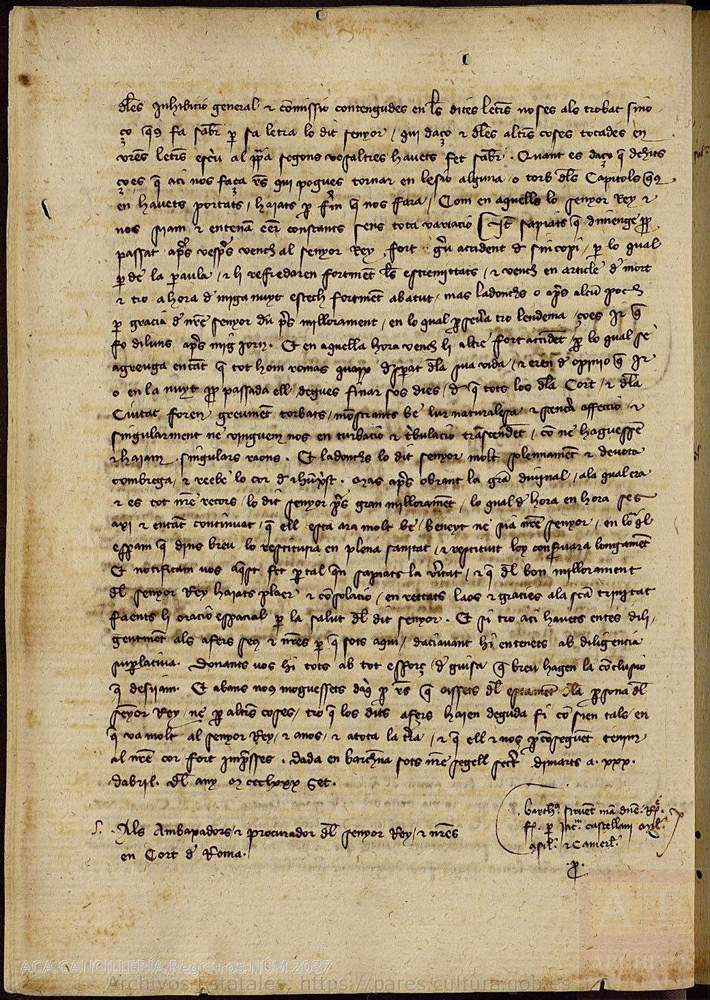

How history gets made, one day at a time
In January 1387 Joan became king and Violant, at twenty-three, became queen. Their secretaries copied outgoing letters into the registers now kept at the Arxiu de la Corona d’Aragó in Barcelona. Each episode of Molt Cara Companyona takes one of those letters on its own date and works through it in the open: the handwriting, the translation, the guesswork, and the questions that remain.
The episodes are short and daily for a reason. As the season’s notes put it, “I want to bring listeners into the process of how history is made.” The show’s motto is dissatisfaction guaranteed: a good reading of the past ends with better questions, not with everything answered.
Tuesday, 30 April 1387
Episode 127. Violant to the Crown’s ambassadors at the papal court. ACA, Cancillería, Registros, núm. 2037, f. 17v

Two days after the king nearly died
On Sunday evening Joan collapsed and received the last rites. By Tuesday he was recovering, and Violant wrote to the Crown’s ambassadors in Avignon. This page continues from the recto. Scroll, and the scribe writes it out line by line, with the English beside it.
Transcription and translation from the episode’s reconciled edition; uncertain readings are marked [?]. Line divisions follow the manuscript.
Why does this letter matter? In the episode’s words, “their level of co-rule was exceptional.” Joan’s illness kept him from fully functioning as a monarch, so he depended on Violant to fill the gap; she depended on him staying alive to keep their rule legally intact. Here she is the authoritative source on the condition of the king’s body, and the one telling the ambassadors to hold their ground.
Where the letters went
The world of the letters
Coastlines are modern, drawn the way Mallorcan chartmakers drew theirs, with wind lines fanning out across the sea. The Catalan Atlas, made in Palma around 1375, ended up in the French royal library. Scholars still argue over whether Joan was the one who sent it.
Violant’s road south
Violant was born a princess of Bar and spent most of her childhood at the court of her uncle, the King of France. In 1380, at about fifteen, she married Joan, heir to the Crown of Aragon. The marriage tied the court to France.
One letter, 30 April 1387
From Barcelona to the papal court at Avignon: the king is recovering, so stay at your post, whatever you hear.
182 episodes, in date order
Now every letter in the season, in date order, plotted at the seat of the person it was sent to.
Most business stayed close
Officials in Zaragoza, Valencia and Lleida, the governor of Mallorca, the towns of Catalonia: the daily work of the registers ran through the Crown’s own lands.
Every place, every letter
Hover over or tap a place to see the episodes that wrote to it.
Every day of the season
Each square is a day and an episode. Filled squares are documents issued in Violant’s name, outlined squares are Joan’s, and dotted squares are someone else’s or unclear. Choose one to read what it’s about.
Your host
Jonathan Seyfried is a historian and doctoral student at the University of New Mexico. His dissertation studies Joan I and Violant de Bar: gendered criticism, political authority, and the spread of French culture at the late medieval court of the Crown of Aragon. He reads the registers in their original Gothic secretarial hand, in Latin and Catalan.